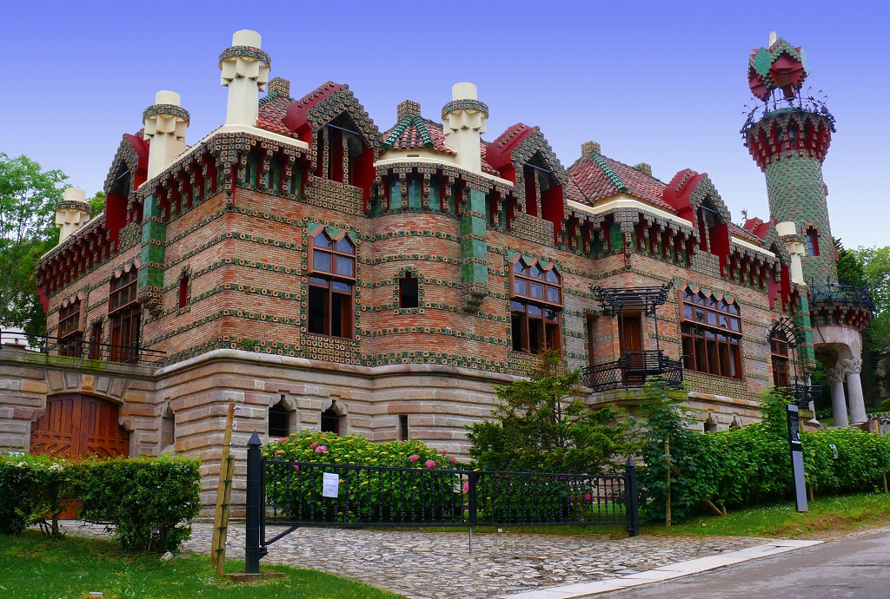

El Capricho de Gaudí es uno de los emblemas de la Comillas monumental, salpicada de
edificios modernistas y que tiene su origen bajo el patronazgo de don Antonio López,
primer Marqués de Comillas, quien consiguió que durante el verano de 1881 el rey
Alfonso XII disfrutase sus vacaciones en la localidad, convirtiéndose así en el lugar
elegido por la aristocracia como centro de veraneo. Esto permitió que importantes
arquitectos modernistas catalanes del momento realizaran allí buena parte de sus obras,
dotándola así de un conjunto de extraordinaria belleza. Además de El Capricho, el
modernismo se respira en el Palacio de Sobrellano, obra de Juan Martorell, y la
Universidad Pontificia (de Martorell y Cascante con detalles ornamentales y la
portada de acceso de Doménech)
